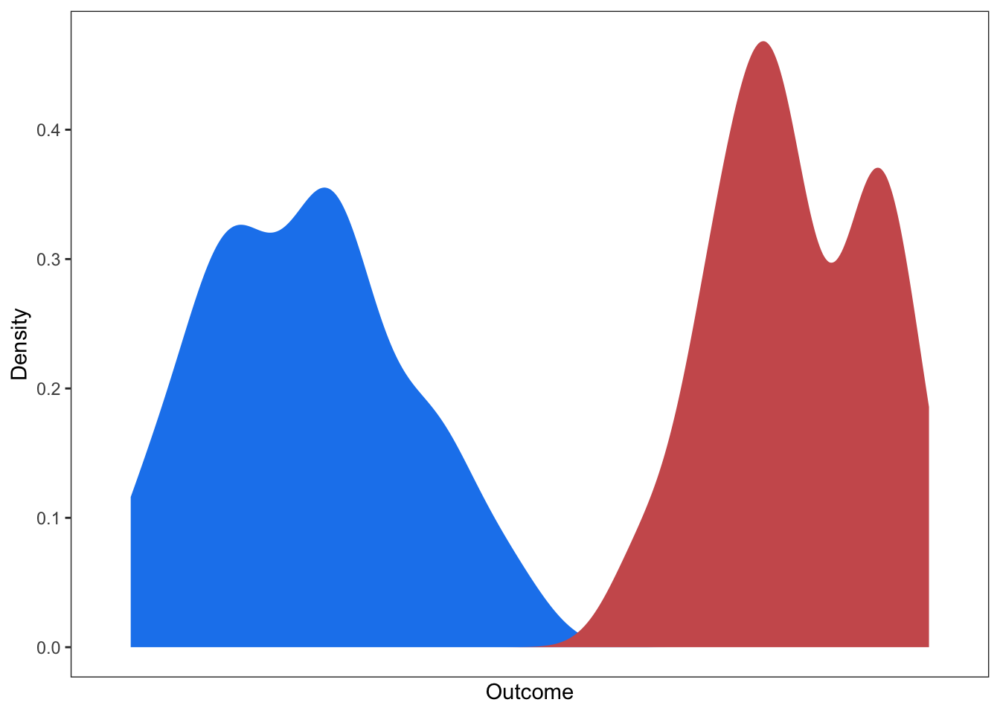
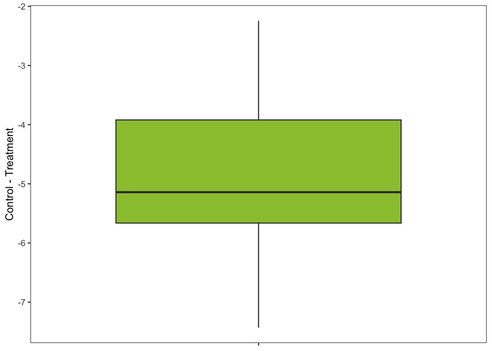
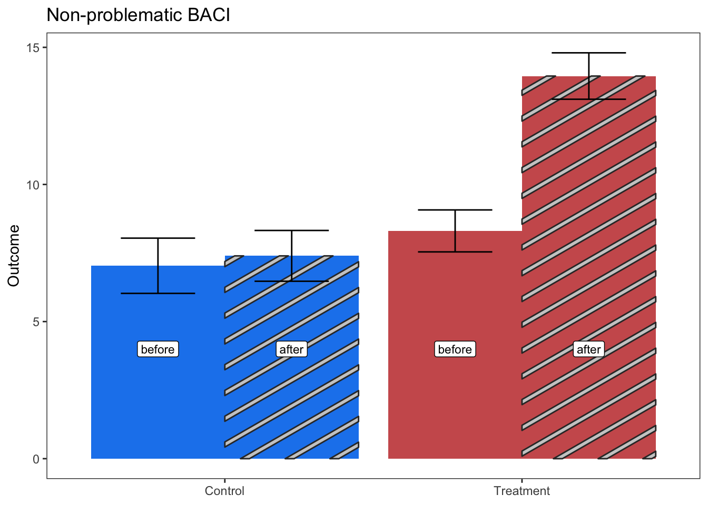
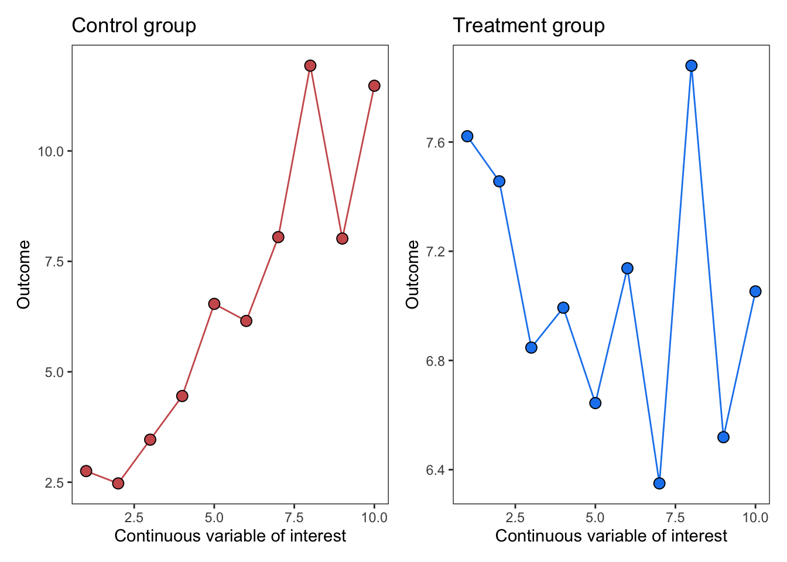
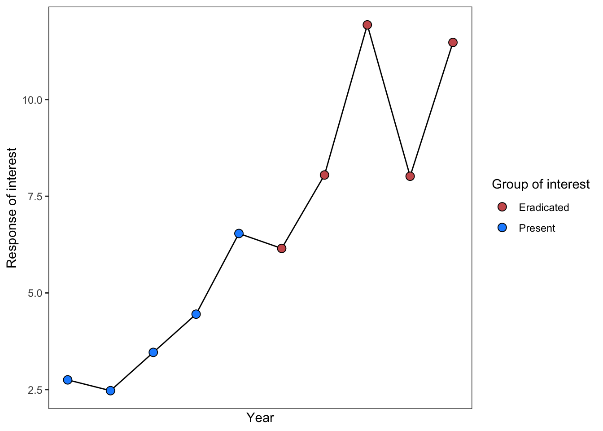
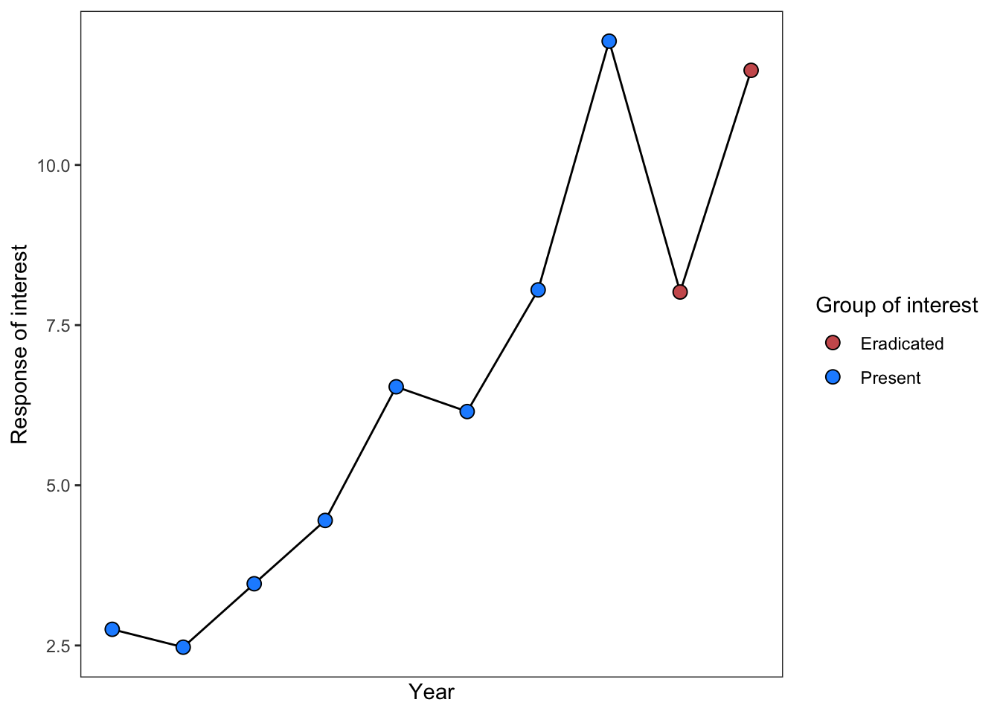
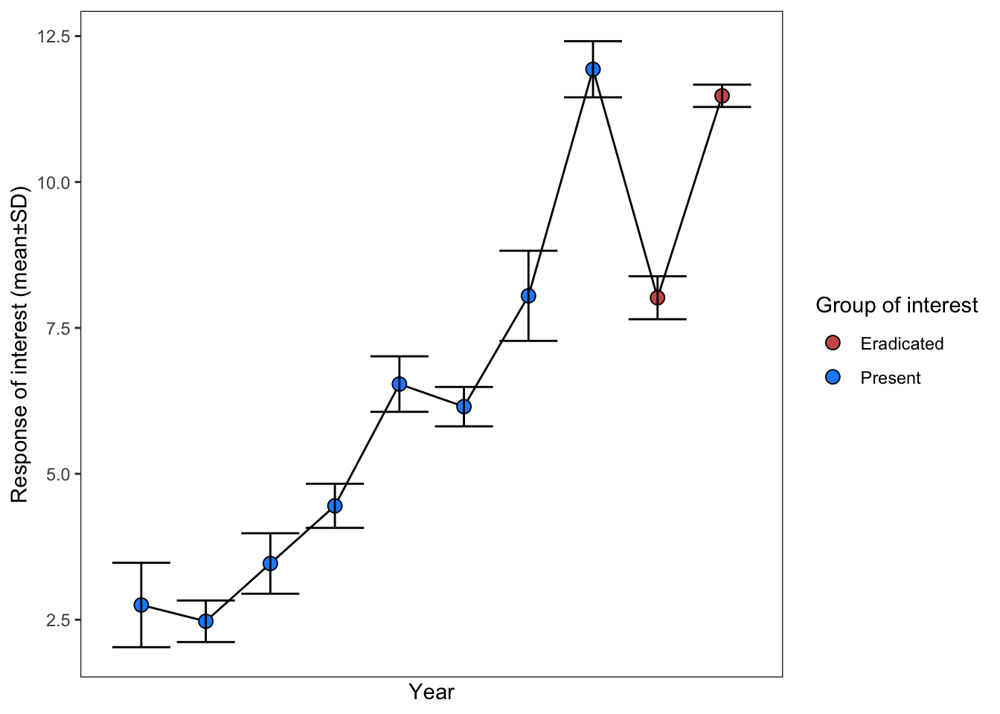

| mean_type | error_type | experimental_mean | experimental_error | experimental_N | control_mean | control_error | control_N |
|---|---|---|---|---|---|---|---|
| mean | SD | 1.5 | 0.10 | 15 | 0.75 | 0.09 | 15 |
| mean | SE | 3.0 | 0.05 | 20 | 1.50 | 0.04 | 20 |
| median | 95% CI | 2.0 | 0.08 | 30 | 2.00 | 0.07 | 30 |
Discrete groups with continuous outcomes
SMD / lnRoM
The experimental workhorse
These are among the most commonly used effect size types in meta-analyses. These effect sizes compare a continuous response variable between two discrete categorical predictors (e.g., Control vs Experiment). By continuous, we mean a measurement summarized by its central tendency (mean, median) and dispersion (variance, standard deviation, standard error) across replicates. These replicates are the sample size.
The primary effect sizes that can be calculated with this data are standardized mean difference (SMD) and log-transformed ratio of means (lnRoM). Please see here for a more thorough description of these effect sizes, their assumptions, and their interpretation. In general, the extraction for these effect sizes is similar. However, as you will see, some data types constrain you to only using SMD because of values ≤ 0, which only SMD can handle.
Database design
We recommend structuring your database to be wide, with columns and to look approximately like this (omitting article id, effect size id, and the other non-independence structures and covariates that you might be interested in):
Extraction
The simple cases
SMD dream material
We’ll start with the simplest figure types, mostly in order to contrast with more complex types. If you’re using metaDigitise() to extract data (Pick et al. 2018), the function will guide you through calibrating the axes and selecting the top of the error bars and the top of the bars themselves (the mean). If the figure reports standard error (\(se\)), metaDigitise() will convert it automatically to standard deviation (\(sd\)). Always be aware of what the error type is.

Box plots are also straightforward and involve extracting the minimum, lower quartile, median, upper quartile, and maximum values. metaDigitise() will walk you through that extraction and will automatically convert the interquartile range and median to mean±SD.

It’s also common to see figures like this with more complex non-independence structures. These can be dealt with by digitizing only the final time point or by controlling for non-independence with random effects (see here for a brief discussion of these issues).

Let’s move on to more complex situations.
Important3-dimensional plots
There was a brief period in the 1990s when these became popular. 3D plots were often of histograms. but many other types existed, including bar charts, etc.
We won’t discuss these much here, we just want to acknowledge your pain if you come across one. Hopefully the general plot designs will be similar to those covered in this tutorial. We believe that WebPlotDigitizer has options to calibrate 3D plots. Alternatively, LLMs are likely able to extract this data.
Raw distributions
Histograms
It’s also common to see the outcome variable of the two discrete predictor groups plotted as separate histograms:

metaDigitise() luckily has built-in functionality for dealing with histograms. The function will guide you through each step, which requires calibrating the axes and then clicking on the left and right corners of each bar. It’ll then convert the extracted distributions into means±sd.
Violin and density plots
The beauty of modern plotting techniques has led to a proliferation of new ways to visualize data. Like violin plots.

Violin plots are basically a vertical version of a density plot:

Eye-ball it? Use a different extraction tool to extract the entire distribution? Then…?
Proportion data
Proportion data (0-1) bounded without error
Sometimes SMD/lnRoM design types will present the total % of a population for a study design that is otherwise indistinguishable from other SMD/lnRoM studies in your dataset. For example, instead of recording mean mortality ± SD across survey plots, a study may present total mortality across all plots or individuals.
This data is derived from the binomial distribution, where standard deviation is directly related to the mean. As such, mean±SD can be extracted from a proportions with the following formulas, where \(p\) is the proportion, \(m\) is the mean, \(sd\) is standard deviation, and \(N_{total}\) is the population size??.
I THINK?
\[\begin{aligned} &sd = p * (1-p) \\ &m = p*N_{total}?? \\ \end{aligned}\]
An alternative to is to use these values to calculate discrete response data for an lnOR type effect size. This may be a better option, especially if this maintains a comparable unit of replication with the rest of your dataset. We simulate a similar example, albeit for a Zr effect size, here
Mean±sd proportion data (0-1)
Means±SD bounded between 0 and 1, however, are also challenged by numeric properties: variance tends to retreat to zero when the mean approaches 0 or 1 (Macartney et al. 2022).
To resolve this, you need to transform both the means and the standard deviations, using an arcsin-square root transformation on the mean and an equation derived using the delta method on the standard deviation (see Macartney et al. (2022)). Where \(m\) is the group mean and \(sd\) is its standard deviation:
\[\begin{aligned} &m' = arcsin(\sqrt{m})\\ &sd' = \sqrt{\frac{sd^2}{4m(1-m)}}\\ \end{aligned}\]
In R:
transformed_mean transformed_sd
0.7753975 0.1091089 And then calculate your effect sizes as normal with the transformed values (\(m'\) and \(sd'\)). Note that your sample size will be the number of sites this proportion was calculated across.
CautionReconstructing binomial data from means±sd
Proportion data is, at its root, discrete-outcome data, like that naturally handled by lnOR effect sizes. It is possible to reconstruct the underlying discrete-outcome data from author-reported means±sd across trials/sites/islands/etc, which allows you to calculate an lnOR type effect size.
This can help align the unit of replication of this effect size with the rest of your dataset, if the rest of your data treats number of individuals as the unit of replication. Analyzing mean±sd of proportion data with an SMD/lnRoM effect size would likely treat the number of trials/sites/islands/plots as the unit of replication instead, which is likely to underweight this effect size in your models.
To reconstruct the raw binary outcomes from author reported means and sd, see our explanation here and a more general tutorial about reconstructing various data types here
Complex data reporting
Many studies will present data that has already been partially summarized, such as by taking the difference between paired plots, calculating ratios between means (or paired measurements) or reporting effect sizes themselves. Still other studies may present complex experimental designs, such as before-after-control-impact designs, that require you to calculate differences between groups in order to calculate your effect size.
Here we’ll go through the most common of these challenges, starting with differences between treatments.
Differences
Some studies used paired designs where, instead of reporting each pair separately, they subtract the paired samples from each other and report mean±error of the difference.

To deal with this data, we’ll extract the boxplot with metaDigitise(), which will convert the median±interquartile range to mean±SD. We will then consider the control group to have a mean of 0. However, you have only one measurement of error. For this reason, you’ll have to pretend that the control error is the same as the treatment error.
| Treatment mean | Treatment SD | Control mean | Control SD |
|---|---|---|---|
| -8.11 | 1.27 | 0 | 1.27 |
Note that since lnRoM cannot accept negative values or 0s, you have no choice but to use SMD for this type of data. If the difference was positive, you could use lnRoM, after adding a small constant to the mean of the control group.
Also, given that this is paired data, you should use a paired formulation of SMD or lnRoM. Note that you have to specify \(r\) (ri in escalc) for this. We recommend using the values of 0.5 or 0.8 and conducting sensitivity tests with both options.
# r = 0.8
eff_size(x1 = -8.11, sd1 = 1.27,
x2 = 0, sd2 = 1.27,
n = 15, r = 0.8,
paired = TRUE,
verbose = FALSE,
effect_type = "SMD")
# r = 0.5
eff_size(x1 = -8.11, sd1 = 1.27,
x2 = 0, sd2 = 1.27,
n = 15, r = 0.5,
paired = TRUE,
verbose = FALSE,
effect_type = "SMD")Ratios of control and treatment groups
I don’t even remember writing this section..
Some studies report the ratio of the control group to the treatment group, instead of subtracting the samples from each other and reporting the mean±error of the difference.
In other words, they report the response ratio (which might be logged or unlogged). This data, depending on how it was calculated, be used to calculate lnRoM effect sizes. These can then be converted to SMD, if that is your dominant effect size (see our section on effect size conversions)
Does it matter whether the response ratio was calculated between pairs and then summarized or calculated across means?
Results reported as an effect size itself
One common situation is for studies to report their results as an effect size itself (e.g., SMD or lnRoM). These could be extracted directly as your effect size except that in our experience these studies rarely report a measure of dispersion (sampling variance, or SD or SE which could be converted to variance).
If a measure of error is reported then you can use these effect sizes directly or convert them to your target effect size. See here on how to convert between effect size types.
If a measurement of error is provided, then you can extract the data as is, and convert that error to sampling variance. For example, if SMD ± standard error was plotted, the sampling variance is \[vi = SE^2\].
If a study reports standardized mean differences (e.g., Cohen’s d), which is uncorrected estimator of SMD, you can use escalc to convert it to Hedges' g, the dominant estimator of SMD by specifying Cohen’s d as the di argument:
escalc(measure = "SMD",
di = 5,
n1i = 10, n2i = 10)
yi vi
1 4.7882 0.7732 In many other cases, there’s nothing you can do but email the authors and hope they have their raw data.
Before-after-control-impact designs
Before-after control-impact (BACI) designs are gold standard experimental designs. Yet most meta-analyses ignore the before treatment and only extract and analyze the ‘after’ treatments. Here is a BACI figure:

In this case, only extracting and analyzing the ‘after’ data isn’t a big deal, because the differences in the ‘before’ groups in the control and treatment are minimal.
However, what about a more problematic result, where there’s a big difference in before conditions between the control and treatment?

What do you do about something like that? Do you just exclude the study?
The best way to deal with this data is to calculate the difference between the means of the before and after groups for each treatment of interest.
Then use the standard deviation from the after treatment group. You could alternatively use the standard deviation from the before group, but we’re not sure how to justify this (you might know though).
Since the treatment groups themselves are not paired, you’d use an unpaired estimator formula.
Since your values may be negative, you’ll most likely have to use SMD. Imagine the object dt below is your raw extracted data:
dt m sd before_after control_impact
<num> <num> <fctr> <char>
1: 7.396193 0.9263211 after control
2: 13.953980 0.8465740 after impact
3: 3.000000 1.0074408 before control
4: 8.305976 0.7652190 before impactFirst, we reshape the data so that you can subtract the before/after treatments:
dt.wide <- dcast(data = dt,
control_impact ~ before_after,
value.var = c("m", "sd"))Then subtract the means and select just the “after” standard deviation (st_after):
dt.wide[, difference := m_after - m_before]
dt.wide <- dt.wide[, sd := sd_after]Now, drop the columns you don’t need, cast wide again by your treatment column (control_impact) and calculate your effect size.
dt.final <- dcast(dt.wide[, .(control_impact, difference, sd)],
. ~ control_impact,
value.var = c("difference", "sd"))
escalc(measure = "SMD",
m1i = difference_impact, m2i = difference_control,
n1i = 15, n2i = 15,
sd1i = sd_impact, sd2i = sd_control,
data = dt.final)
. difference_control difference_impact sd_control sd_impact yi vi
1 . 4.396193 5.648004 0.9263211 0.846574 1.3726 0.1647 Note that these 4 group designs may appear in other contexts than pre and post and can be fairly in common in ecological field experiments. For example, to understand if reintroduced wild dogs affect vegetation by reducing dik-dik browsing and abundance, Ford et al. (2015) placed controls and exclosures in areas with and without wild dogs, predicting that the difference between controls and exclosures would be greatest where there are no wild dogs.

In this case, you’d do the same as above. As you can see, when dealing with this type of data, lnRoM often becomes unusable because of negative values. Instead you have to use SMD.
% Change
Sometimes BACI type data is presented directly as percent change, which saves us some of the steps above.

Crossed designs (meta-analysis of interaction)
Discrete x discrete crossed design
Sometimes you are interested explicitly in interactions between two treatments. In most studies one of the treatments you are interested in would otherwise be a moderator (e.g., not crossed with the main experimental comparison), however in others you find a fully crossed design. What do you do about that?

In these cases, you’ll need to simply record these crossed moderators in separate columns in your dataset.
Continuous x discrete crossed design
However, sometimes interactions will be between continuous and discrete variables:

In this case, you could extract each point for the control group and the treatment group and calculate mean±SD across the continuous variable. But, if the continuous variable was a key moderator of interest in your analysis, it’d be lost from your meta-analysis.
Alternatively, you could calculate two Zr effect sizes, one for the ‘control group’ and one for the ‘treatment group’. The control group and moderator factor would then be a moderator—if this is how the rest of your dataset is designed.
As you can see, there might be no perfect solution. Care and thought are necessary to make this type of data comparable to other effect sizes in your dataset.
Time series
Time series with a binary predictor
Sometimes the data is presented as a time series with a discrete intervention at one point in the time series, such as the introduction or eradication of a species. For example:

In the case above, you should extract the response of interest for each group (Present versus Eradicated), calculate mean±SD for each group, and then calculate SMD or lnRoM with the paired estimator. The sample size would be the number of individual points per group.
However, you’ll often see cases like this as well, with \(<3\) measurements for one of the factor groups (making SMD impossible to calculate):

In this case, your best bet will be to calculate a Zr effect size with a binary continuous predictor of 0 or 1 (see sec). The resulting effect size could be converted to SMD.
Note that summarizing time series data may often create summary statistics that are less independent than data that may derive from separate replicates. Record these summaries for use in sensitivity analysis. See our discussion here and Noble et al. (2017).
Time series with error bars
However, what do you do if each of these measurements has associated error?

If the sample size associated with each point is known (e.g., reported in text), then you can draw the underlying data based on sample size, group mean, and standard deviation extracted from the figure. This should use the underlying data generating process of the response.
Warning
Note that reconstructing underlying data is an experimental method. Use carefully.
If the response is normally distributed, or close enough, then you can use the R base function rnorm. If the data is not normally distributed then you can do a similar process, generating data from the underlying data generating process (see here) This will produce a longer dataset, with a row for every estimated sample. You’d then calculate the group mean, standard deviation, and total sample size for the binary predictor of interest, in this case “Eradicated” versus “Present”. You can also do a similar process to calculate Zr, if a correlation includes error bars (see several examples here).
Tip
If the author-provided data presents standard error (or confidence intervals, etc) instead of standard deviation (which is common), then you must convert these to standard deviation before attempting to reconstruct the underlying distribution based on author-provided sample size per point. Converting between these error types are common and are overviewed here
To walk you through this, imagine you’ve extracted the means and standard deviation for each point in the figure above. Each point represents a survey. The authors reported in the text that each survey had a sample size (based on number of plots) of 10. You could produce a table like this:
| mean | sd | N | status |
|---|---|---|---|
| 2.752334 | 0.7229819 | 10 | Present |
| 2.473183 | 0.3558507 | 10 | Present |
| 3.463447 | 0.5181286 | 10 | Present |
| 4.451586 | 0.3779618 | 10 | Present |
| 6.537567 | 0.4755464 | 10 | Present |
| 6.151023 | 0.3372733 | 10 | Present |
| 8.049874 | 0.7723091 | 10 | Present |
| 11.931784 | 0.4812619 | 10 | Present |
| 8.016799 | 0.3680070 | 10 | Eradicated |
| 11.476670 | 0.1910220 | 10 | Eradicated |
Each row of this dataset is a summary of an internal dataset, which we can reconstruct by drawing from the appropriate statistical distribution. In this case, we are going to assume that the data is normally distributed. See here for how to draw data for other distributions (e.g., negative binomial). The object dt is our table of extracted means, standard deviations, and author-provided sample sizes. To keep the code readable, we’ll do this in a for loop, saving each drawn dataset to an element of our list object dt_expanded:
[1] 10[1] 100We have now reconstructed the ‘original’ data across all time points, creating a 100 row dataset. We can now summarize the mean and standard deviation of the reconstructed data by our treatment group (Present vs Eradicated).
| status | mean | sd | total_n |
|---|---|---|---|
| Present | 5.789297 | 2.980891 | 80 |
| Eradicated | 9.731651 | 1.868012 | 20 |
Voila, a dataset that constructs group means that are comparable, with an accurate sample size and pooled standard deviation. If the underlying data generating process is not normal (which is likely the case for ecological data, especially abundance data), then you probably want to use a negative binomial distribution to generate data.
Unfortunately, if the sample size for each of the points in the above figure is unknown, then your best option if the number of groups is \(≥3\), is to ignore the standard deviation and calculate a new mean from each point for the two SMD comparison groups. Or, if the number of groups is \(<3\), to calculate Zr from just the group means per point (ignoring the standard deviation).
Remember that these choices severely affect your unit of replication and should be accounted for in your modeling approach.
ImportantSummarizing non-independent and independent data
In several sections through this tutorial we demonstrate or allude to reconstructing underlying data behind author summaries. This can align the unit of replication of the resulting effect sizes with the rest of your dataset.
However, one should be thoughtful and careful about the non-independence structures embedded within these summaries. The resulting effect size will be based on a mixture of more and less independent data. For example, in the time series above, there are two types of non-independence: the measurements through time and the summarized measurements within each time point.
Reconstructing the underlying data with rnorm, as we demonstrated above, and then summarizing by the mean±sd of each treatment group mixes these non-independence structures.
For that reason, we suggest that data extracted like this should be tagged and that you should record whether the data was summarized across time, across spatially-independent samples (or different individuals), or across both. These factors may explain methodological heterogeneity in your dataset. Note that similar mixtures of spatially, temporally, or spatiotemporally summarized data are also likely embedded within author-reported means±sds (which we also recommend recording)
Miscellaneous?
Geometric mean
(HAO?), can you double check this?
This doesn’t really belong in Sloppy reporting section We have seen some studies that report geometric means instead of normal algorithmic means.
According to Gemini, you can convert the geometric mean (\(m_{geo}\)) and geometric standard deviation (\(sd_{geo}\)) to the algorithmic (e.g., normal) mean (\(m_a\)) and normal standard deviation (\(sd_a\)) with the following equation, which assumes a log-normal distribution:
I think gemini might have made some mistakes. DOUBLE CHECK
\[\begin{aligned} &Var_{ln} = log(sd_{geo})^2 \\ &m_a = m_{geo} * e^{\frac{Var_{ln}}{2}} \\ &sd_a = m_a * \sqrt{e^{Var_{ln}} - 1} \\ \end{aligned}\]
In R:
final_mean final_sd
47.17111 54.10126 That sd is extremely high…
\(sd\) of 0
(Santi?) — maybe we should also have means==0 here too…
There may be many cases where the standard deviation of one of the treatment groups is 0. To calculate either SMD or lnRoM with this data, you need to add a small constant. But the choice of constant can influence your results. Blah blah blah. (Santi?).
Model estimates
THIS NEEDS LOTS OF HELP
There is often a tension in publishing primary empirical articles between presenting statistical summaries that are usable for a meta-analyst (e.g., means, standard deviation, sample size) and presenting statistical summaries that are robust to non-independence. You will note as a meta-analyst that many studies present model estimates, often derived from mixed-effect models, instead of raw summary statistics. Unfortunately, mixed-effect model estimates are not usable in meta-analysis.
Other articles will present test statistics and p-values from simple linear models (e.g., not mixed effect models). These are usable by the meta-analyst, with some core assumptions.
CAN WE CALCULATE lnRoM from model estimates?
| Model type | Usable | Effect size | Statistics required |
|---|---|---|---|
| GLMM | No | none | |
| t test | Yes | SMD | |
| paired t test | Yes | SMD | |
| 1-way ANOVA | Yes? | ? | |
| 2-way ANOVA | Yes? | ? | |
| linear model | Yes | ? | |
| mixed effect model | No | N/A | N/A |
\(t\) and \(z\) are useful, as they include directionality (with a negative or positive sign). F, p-values, chi-square are difficult to use because they lack directionality (so have to figure it out from text or figures). Unfortunately, many articles simply write non-directional statements like “There was no relationship between predictor and response (\(\chi^2\)=0.5, p=0.7)”. In these situations, the data is unusable because there’s no suggestion of directionality.
From the t statistic
Calculating SMD from test statistics depends on whether the data come from a paired design (in which case df = n-1) or an independent two-sample design (df = n_1 + n_2 - 2). This is the formula for calculating SMD from a unpaired, two-sample design t test statistic:
\[\begin{aligned} &d=t*\sqrt{\frac{1}{n_1} + \frac{1}{n_2}} \\ &J= 1 - \frac{3}{4(n_1 + n_2 - 2) - 1} \\ &g=J*d \\ &Var(g) = \frac{n_1 + n_2}{n_1 n_2} + \frac{g^2}{2(n_1 + n_2 - 2)} \\ \end{aligned}\]
In escalc you simply specify the t statistic (with ti), as well as sample sizes for each group (n1, n2) and use measure “SMD”, which will return the unpaired SMD estimate.
t = -1.5
n1 = 15
n2 = 15
escalc(measure = "SMD",
ti = t,
n1i = n1,
n2i = n2)
yi vi
1 -0.5329 0.1381 For a paired design (e.g., paired t test):
\[\begin{aligned} &d=\frac{t}{\sqrt{n}} \\ &J= 1 - \frac{3}{4(n - 1) - 1} \\ &g=J*d\\ &Var(g) = \frac{1}{n} + \frac{g^2}{2(n - 1)} \\ \end{aligned}\]
We do not know the measure for an SMD paired formula (that is still comparable to the unpaired SMD).
# escalc(measure = "SMD",
# ti = t,
# n1i = n1,
# n2i = n2)From p values:
To calculate SMD from p values, in escalc, one needs to assign the sign (e.g., + or -) to the p-value (or do this to the yi point estimate afterwards). Note that these p-values needed to be from two-sided tests.
p = -0.07
n1 = 15
n2 = 15
escalc(measure = "SMD",
pi = p,
n1i = n1,
n2i = n2)
yi vi
1 -0.6693 0.1408 From F statistic
I don’t see this as an option in escalc but I’ve heard it’s usable. Tips anyone?
PCAs / PCoAs — the lost minefield of ordination
Eamonn extracted data from a PCA based on some source that said it was ok. Oh boy. Is that actually ok?
I don’t think so…But maybe it’s just a latent axis and it’s ok? But the axis depends on whatever other variables were included….
Least Square Means (LS Means) or Estimated Marginal Means
Can these be used instead of arithmetic means? According to Gemini they can, just as is. But I always thought they couldn’t
And can the model-derived SE be used as well?
Some studies don’t report true arithmetic means but instead report group averages derived from model estimates. These often look like arithmetic means and may even be labelled as such. You need to be careful to read figure captions and methods to be sure.
NOTES / To read
https://besjournals.onlinelibrary.wiley.com/doi/10.1111/2041-210X.12927
References
Ford, Adam T, Jacob R Goheen, David J Augustine, et al. 2015. “Recovery of African Wild Dogs Suppresses Prey but Does Not Trigger a Trophic Cascade.” Ecology 96 (10): 2705–14.
Macartney, Erin L, Malgorzata Lagisz, and Shinichi Nakagawa. 2022. “The Relative Benefits of Environmental Enrichment on Learning and Memory Are Greater When Stressed: A Meta-Analysis of Interactions in Rodents.” Neurosci. Biobehav. Rev. 135 (104554): 104554.
Noble, Daniel W A, Malgorzata Lagisz, Rose E O’dea, and Shinichi Nakagawa. 2017. “Nonindependence and Sensitivity Analyses in Ecological and Evolutionary Meta-Analyses.” Mol. Ecol. 26 (9): 2410–25.
Pick, Joel L, Shinichi Nakagawa, and Daniel W A Noble. 2018. “Reproducible, Flexible and High Throughput Data Extraction from Primary Literature: The metaDigitise R Package.” In BioRxiv.